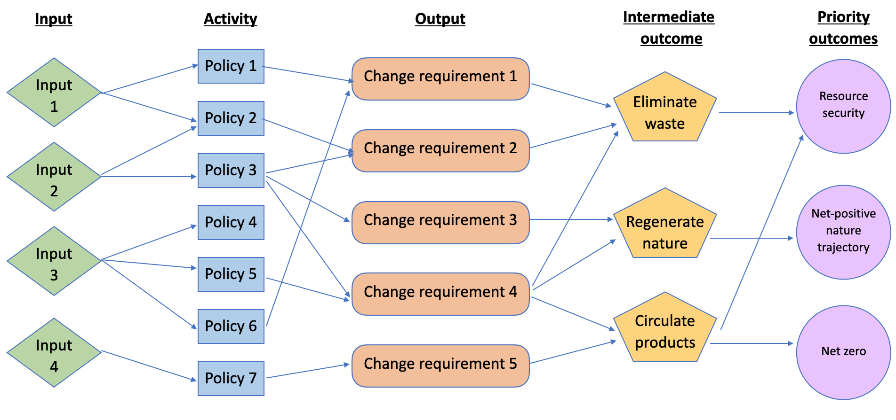

Policy change
To help identify entry-points for influence, the process of law and policy-making in the UK can be broken down into a number of stages1
Actors internal and external to government play a role in bringing attention to issues for potential response by policy-makers. This is done via routes including improving the evidence base and disseminating results, building coalitions of support for a particular position, direct engagement with policy-makers, legal measures and other forms of pressure.2 For instance, the Ellen MacArthur Foundation through the production of several foundational reports over the last decade have highlighted the potential of CE strategies to tackle complex societal issues.
How problems or solutions are framed by stakeholders (including in terms of their magnitude and causes) can be consequential for determining their perceived legitimacy for policy response and which policy responses might be considered (Dryzek, 1997; Knill and Tosun, 2012). A ‘punctuated equilibrium’ model emphasises relatively stable periods in the policy-making process followed by more rapid change (Baumgartner and Jones, 1993). Windows in which policy-making occurs come about when a compelling problem sees a viable solution exist for which there is political receptivity (Kingdon, 1984).
From a broad number of issues and potential solutions existing at a ‘systemic agenda’ level, those with sufficient backing and which align with institutional objectives or mandates of policy-making departments may rise to an ‘institutional agenda’ (Cobb and Elder, 1983). Influenced by the discretion of officials including based on risk appetite and personal preferences, these may then come onto the ‘decisional agenda’ wherein a policy or legal position is formulated.
The formulation stage of the policy cycle involves devising a course of action on a (set of) issue(s) now at the ‘decisional agenda’. With a rationale for government intervention established and where options for interventions need to be identified, key decision-support mechanisms used in reviewing and building evidence include:
Internal departmental analysis;
The funding of research programmes such as NICER;
The establishment of expert groups or solicited expertise from consultancies; and
The publication of Green Papers3 alongside wider stakeholder engagement (UK Parliament, 2022).
Appraisal
Longlist appraisal
Tools such as multi-criteria decision analysis (MCDA) can be used as part of longlist appraisal to help balance criteria when prioritising options. Key questions central government departments may have in th4 longlist process include what is the alignment of the options to strategic objectives of the department and what are the critical and optional portfolios needed to deliver these changes along with their feasibility and affordability.
A logic model can be used to support policy formulation (HMT, 2022). It represents the theory (causal pathways and feedback loops) of how an intervention and its inputs can contribute to outcomes and yield benefits by addressing key drivers of performance (‘theory of change’) (OHID, 2018). Logic models can include the following components:
Input: Something put into a process, project or change e.g. monetary or operational resources;
Activity: What is done with the resources to produce the intended outputs e.g. introduction of policy or research as part of a programme like NICER;
Outputs: Goods and services produced from inputs which result from the completion of activities;
Intermediate outcomes: Changes resulting from outputs that have interacted with people and which might be the first outcomes that are observed (e.g. policy goals to support CE principles EMF, 2021);
Strategic objectives/goals: The real-world (and generally, longer-term) impact the department is seeking to achieve e.g. social, economic or environmental change

Robust logic models have their assumptions grounded in evidence. Dependencies between policies may also be identified at this stage. ‘Systems mapping’ is an increasingly incorporated part of the option identification process (Barbrook-Johnson, 2022).
Shortlist appraisal
Since 1999 in the UK (NAO, 2014), laws and policies expected to have a large welfare impact are subject to an extended shortlist appraisal process. Cost-benefit analysis4 (CBA) as part of an impact assessment is the default analytical framework when formulating government regulation with an anticipated impact over a certain threshold (Hertin, Jacob and Volkery, 2008; British Ecological Society, 2017).
The Green Book guides Government’s approach to ex ante policy appraisal, setting out steps to systematically compare social costs and benefits of proposals based on the welfare changes they may bring about. The basic aim of such cost-benefit analysis (CBA) is to help provide a rational, transparent, consistent and accountable decision-making tool to help choose between proposals in a comparable way on the basis of the wellbeing/utility changes they yield to people in society.
CBA involves the systematic counting of costs (reductions in welfare) and benefits (increases in welfare) that will accrue to people (who have ‘standing’ within the analysis) as a result of a discrete project or policy. As distinct from financial analysis that compares private revenues and costs, social CBA (as is used in government appraisal) compares social benefits and costs (deRus 2011). It also differs from cost-effectiveness analysis by monetizing benefits in addition to costs. A good policy or investment project evaluated through this methodology is one which provides an overall net-positive increase in societal welfare, and these can be further prioritised based on benefit-cost ratios.
The Green Book acknowledges (section 5.5) that standard cost-benefit analysis techniques are most appropriate for informing policy in contexts of relatively discrete or marginal change, however can work less well outside of these conditions due to: difficulties in capturing structural variation in the economy over time; prices changes; dynamic effects relating to innovation (Ekins and Zenghelis, 2021); and potential change in the values of macroeconomic variables such as the rate of economic growth or productivity effects (Sharpe et al. 2021). Where such conditions are present and there is the potential for welfare impacts to be extremely large and effects on multiple markets to arise, the use of modelling approaches effectively representing system dynamics is desirable (Maddison and Day, 2015; Sharp et al. 2021). Where there are potentially high levels of uncertainty regarding future welfare impacts furthermore, a wider focus on risks and opportunities may also be warranted.
In addition, potential sources of error in CBA include an evidenced optimism bias leading to benefits being overstated and costs minimised. In addition, the exclusion of impacts that are important. For instance, a CBA is concerned with allocative efficiency, supporting societal decision-making by identifying opportunities to heighten efficiency in the allocation of scarce economic resources. While cost-benefit analysis can help assess effectiveness and efficiency, its limitations include generally ignoring equity (Van Wee and Roeser 2013). Forecasting errors and valuation errors can also impact calculations of both the baseline and against-baseline option analysis. As a result of these issues, CBA is only one input, among others, in the policy formulation process.
Consultation
While actors involved in law and policy-making across the UK unavoidably include those in government roles such as elected representatives and government departments, non-government organisations, businesses and individual citizens also can influence the policy cycle. This is increasingly through formal routes such as consultation and external review.
When a policy option for introduction is selected, white papers i.e. policy documents produced by the Government which outlines proposals for future legislation and published impact assessments can be used as a mechanism for public consultation e.g. that ran on mandatory digital waste tracking by Defra. In some cases, a summary of responses is then published e.g. that for Environment Act targets also published by Defra stating a rationale for selected policy direction including additional further analysis and additional subsequent public consultation.
Across the stage of policy formulation, attention to issues and solutions can be seen to follow a cycle of its own (Downs, 1972), with ‘discovery’ of a problem or solution, followed by an improved understanding of the costs of response or uncertainty being recognised and gradual decline in interest resulting, including in a context of multiple issues competing for policy-makers’ attention (Connelly, 2012). Pressure to introduce policies can attract negative feedback among actors internal and external to government, creating frictions which lead to no change or small adjustments (Cater and Jacobs, 2014; Fitch-Roy, Benson and Monciardini, 2020).
Implementation covers all activities relating to putting policies into effect/practice including creating or changing standards, rules or guidance and building/putting in place administrative apparatus for legal or policy implementation. This can also extend to policy maintenace or termination. Introducing specific legal or policy instruments can occur through Primary legislation arising through Acts of Parliament i.e. ‘statutes’ or secondary legislation by bodies afforded power by primary legislation including Statutory Instruments and Statutory Rules. In some cases, ‘tertiary’ legislation might be used to refer to procedures and/or guidelines issued by public bodies.
The introduction of policy instruments such as permitting processes, standards and taxes often requires the involvement of public bodies such as HMRC, the Environment Agency (and its devolved administration equivalents) or local authorities. Effective adoption and implementation by these bodies is critical to shaping final outcomes and can be influenced by the availability of required resources and technical expertise (Barrett, 2004; Sharman and Perkins, 2017). To avoid the risk of slippage or reversal, ensuring regulations are unambiguous and engaging with those involved in implementation, equipping required agencies with required resources and building support, including among target groups can help (Sabatier and Mazamanian, 1979).
Retrospective qualitative and quantitative policy monitoring and evaluation is an increasingly well-established part of the policy cycle across government departments in the UK. Through feeding back on progress towards objectives in real life, this provide opportunities to learn about mechanisms of change and effectiveness and strengthens the evidence base for developing more effective policy going forward including as an input into ex ante analysis.
Examples include Defra’s Resources and Waste Strategy Evaluation Plan or the post-implementation reviews of single-use carrier bag charges undertaken by the Welsh Government. Types of ex post policy evaluation include:
- Process evaluation - helping stakeholders see how a program was achieved, input requirements, barriers and enablers as well as informing implementation and operation management;
- Outcome evaluation - assessing the effectiveness of an intervention(s) in delivering short-to-medium term change characterised as policy outcomes; and
- Impact evaluation - assessing the effectiveness of an intervention(s) in delivering change characterised as policy impact.
As policies are generally introduced into complex systems and rarely introduced discretely, parsing out their effects requires robust evaluation design. This includes assessment against a robust counterfactual5 and a sufficiently broad framing to identify spillovers such as cross-media and transboundary effects6 (Preskill, 2009).
Footnotes
At the same time, processes of policy-making can vary significantly and cross-cutting models of policy change should therefore be understood as simplifications (Bauer and Knill, 2014; Gravey and Jordan, 2016).↩︎
While on one hand actors may seek to encourage a particular response on an issue, others may attempt to contain or limit action (Cobb and Coughlin, 1988).↩︎
Consultation documents allowing people inside and outside of Parliament to provide feedback on policy or legislative proposals.↩︎
The basic aim of cost-benefit analysis (CBA) is to help provide a rational, transparent, consistent and accountable decision-making tool to help choose between proposals in a comparable way on the basis of the welfare/utility changes they yield to people in society.↩︎
Baseline scenarios can be developed using, among other methods: 1) trend extrapolation; 2) econometric methods, including a dummy variable for the date of introduction; 3) linear programming techniques; and 4) judgmental methods.↩︎
Quantitative analytical methods which can be used across both ex ante and ex post assessment include risk assessment, cost-benefit analysis, cost-effectiveness analysis, multi-criteria analysis, counterfactual analysis enabled through matching and difference-in-difference assessment and randomised control trials. Qualitative analytical methods generally involve in-depth studies of small sample size, with approaches include case studies (including those comparative), discourse and content analysis, interviews and surveys.↩︎